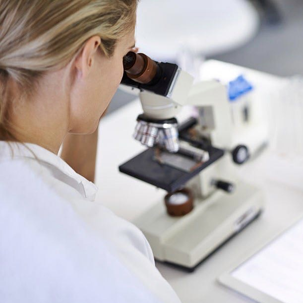

Ski : l'aventure et la prise de risque contrôlée.

Mon parcours
-
Formulation, dimensionnement et conduite des procédés de transformation et conservation alimentaires. Analyse des produits alimentaires et utilisation des outils appropriés. Résolution de problèmes de gestion qualitative et quantitative des agro-ressources dans une perspective de développement durable. Approche systémique de la gestion des agro-ressources, couvrant l'approvisionnement alimentaire et la valorisation des sous-produits. Développement de technologies innovantes avec une orientation vers l'écoconception et l'écologie industrielle. Maîtrise de la transformation des agro-ressources en produits alimentaires, matériaux, et dans une moindre mesure, en énergie renouvelable. Spécialisation dans les problématiques alimentaires des pays du Sud, démontrant une sensibilité aux enjeux spécifiques de ces régions en développement.2023
-
Qualité, sécurité et impact sur l'environnement de l'aliment et de son emballage ALIPACK. Maîtriser la qualité et la sécurité des produits alimentaires et leurs emballages ainsi que le respect de l’environnement. Maîtriser les stratégies de transformation et de conservation des aliments.2023
-
Pôle Alimentec à Bourg en Bresse Réalisation de dosages (chimie), observations microscopiques (biologie), études de bactéries (microbiologie) et utilisation de machines industrielles (pasteurisateur, Ultrafiltration, Four) Maîtriser dans le cadre de la recherche, développement optimisation des procédés et élaboration de nouveaux produits alimentaires Maîtriser et savoir appliquer la démarche qualité dans le respect des normes Maîtriser et savoir organiser le travail d’analyse2022
-
Baccalauréat Scientifique, mention assez-bien Lycée l’oiselet, Bourgoin Jallieu2020
-
Analyse des besoins d'un client avec des expertises techniques et scientifiques. Accompagnement des industriels de l'agroalimentaire afin de maîtriser et valoriser la qualité sanitaire et nutritionnelle des produits. Evaluation des risques pour construire un plan de contrôle. Interprétation des résultats par rapport à la réglementation et aux critères du clients.Depuis octobre 2022
-
Stagiaire Erasmus au sein de l’université Caractérisation de l’aneth et applications dans des aliments nouveaux Utilisation de l’aneth en France et dans le monde. Obtention et caractérisation physico-chimique de l’huiles essentielles. Action antimicrobienne et antioxydante. Développement des produits nouveaux.Avril-juin 2022
-
Stagiaire. Conditionnement et production d’andouillettes.Juin 2021
-
Traitement des données clients dans la direction assurances vie2021
-
Stagiaire dans le service Chimie. Observation et manipulation de produits chimiques utilisés dans des produits innovants pour le béton.Octobre 2019
-
2017-2020
Expérience professionnelle
Soft Skills
Empathie
Écoute attentive et bienveillante
Facilité d’intégration dans un groupe
Persévérance pour poursuivre mes objectifs
Curiosité
Anglais B1
66%
Erasmus en Roumanie, début avril à fin juin 2022. Classe européenne depuis le collège, séjour à Londres février 2015.
Espagnol A2
50%
Séjour Espagne février 2017 (Tolède)
Mes Passions
Découvrir de nouvelle musique : une ouverture d'esprit envers différentes cultures et genres musicaux.
Voyage : exploration, ouverture à de nouvelles cultures et expériences.
Self-défense : la confiance en soi et la sécurité.
Danse : une expression créative et une joie de vivre.